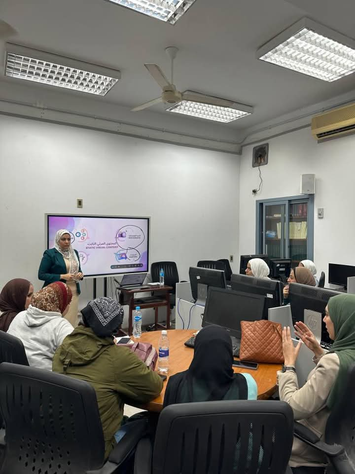
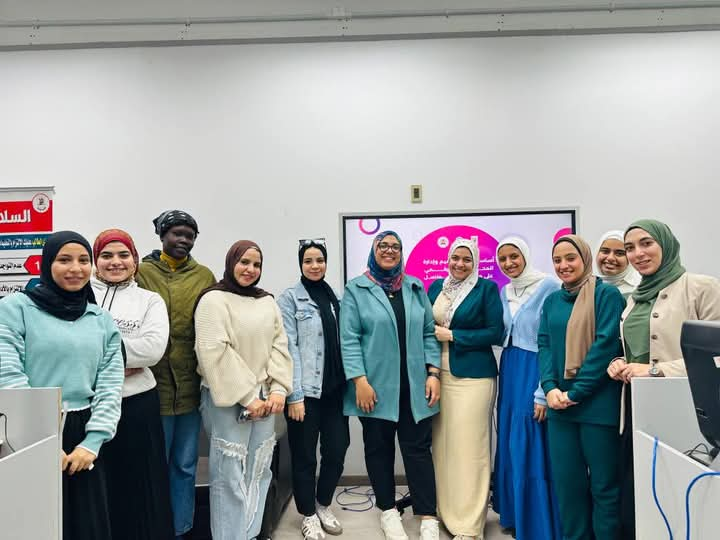
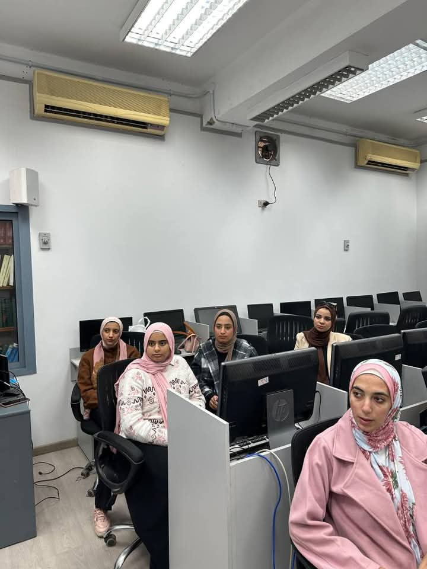
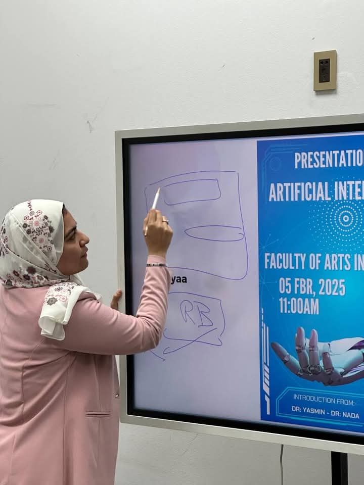

أساسيات تصميم وإدارة المحتوى الرقمي على منصات التواصل الاجتماعي
كانت هذه الدورة التدريبية تجربة مميزة بكل المقاييس! 💼 فقد نُظّمت تحت رعاية كريمة من كل من الأستاذ الدكتور
محمد سامي عبد الصادق، رئيس جامعة القاهرة، والأستاذة الدكتورة غادة عبد الباري، نائب رئيس الجامعة، والأستاذة
الدكتورة نجلاء رأفت سالم، عميد كلية الآداب، وبإشراف متميز من الأستاذة الدكتورة دينا عبد الهادي، والأستاذة
الدكتورة ليلى سميع. وقد تناولت الدورة أساسيات تصميم وإدارة المحتوى الرقمي على منصات التواصل الاجتماعي بصورة
احترافية. 🖥️
في هذه الدورة، قامت الدكتورة ياسمين أشرف حافظ والأستاذة ندى حسن صلاح بشرح أهم الأساسيات في مجال التصميم الجرافيكي، بالإضافة إلى كيفية اختيار استراتيجيات التسويق الرقمي المناسبة للوصول إلى الجمهور المستهدف. كما تم التعريف بأدوات تحليل الأداء عبر المنصات الرقمية.
لم تقتصر الدورة على المحاضرات النظرية فحسب، بل شملت أيضًا تطبيقًا عمليًا، حيث أتيحت لنا الفرصة لتصميم محتوى رقمي متكامل، وتعلّمنا كيفية الترويج له بفعالية عبر المنصات المختلفة.🎯
في ختام الدورة، كانت هذه التجربة فرصة حقيقية لتعزيز مهاراتنا العملية في المجال الرقمي، ولفتح آفاق جديدة لفهم وتطبيق أدوات التواصل الاجتماعي بأحدث الأساليب وأكثرها فاعلية. 💡
صور من المعمل



